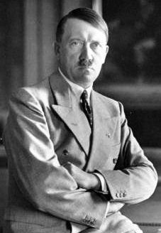
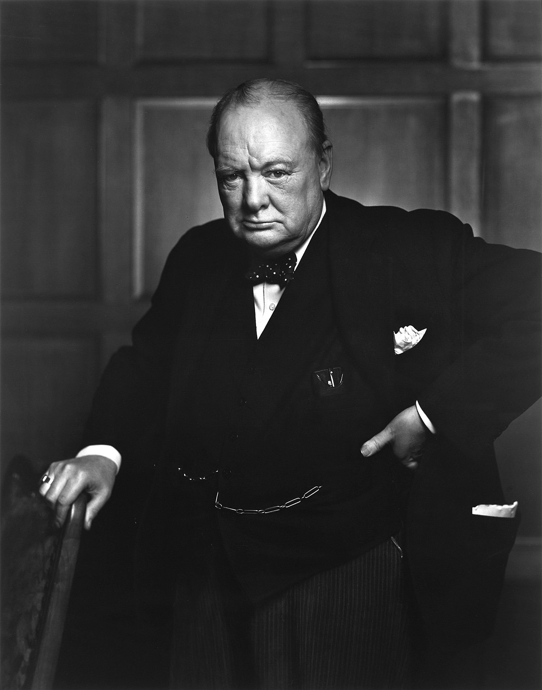
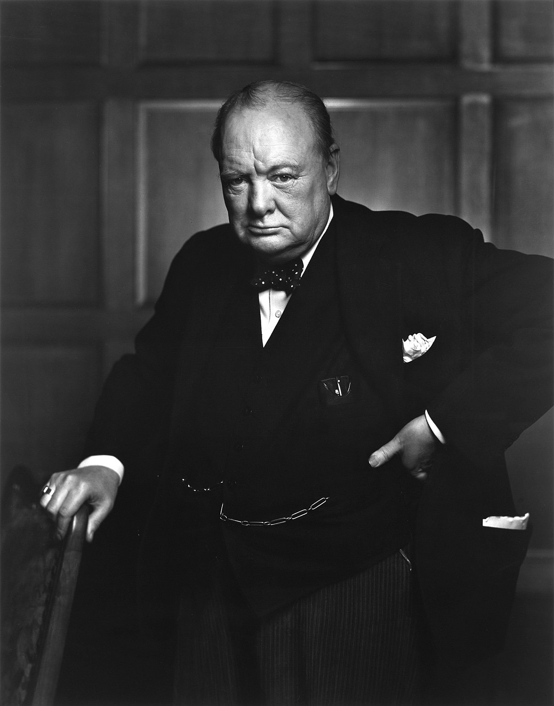

20 April 1889 – 30 April 1945
Braunau am Inn, Österreich-Ungarn

Am 2. August 1934 starb Hindenburg. Ein Tag davor hatte das Kabinett das "Gesetz über das höchste Staatsamt des Reiches" erlassen. In diesem Gesetz heisst es, dass nach dem Tod von Hindenburg das Amt des Präsidenten abgeschafft und seine Befugnisse mit denen des Kanzlers verschmolzen würden. Hitler wurde somit sowohl Staatsoberhaupt als auch Regierungschef und wurde offiziell als Führer und Reichskanzler bezeichnet, obwohl Reichskanzler schliesslich ruhig fallen gelassen wurde. Mit dieser Aktion beseitigte Hitler den letzten Rechtsbehelf, durch den er aus dem Amt entfernt werden konnte.
Als Staatsoberhaupt wurde Hitler Oberbefehlshaber der Streitkräfte.
Am 12. März 1938 kündigte Hitler im Anschluss die Vereinigung Österreichs mit Nazi-Deutschland an. Hitler wandte sich dann der deutschen Bevölkerung im Sudetenland der Tschechoslowakei zu.
In privaten Gesprächen im Jahr 1939 erklärte Hitler, Grossbritannien sei der Hauptfeind, der besiegt werden muss, und Polens Auslöschung sei ein notwendiges Vorspiel für dieses Ziel. Die östliche Flanke wäre gesichert und Land würde zum deutschen Lebensraum hinzugefügt. Beleidigt durch die britische "Garantie" der polnischen Unabhängigkeit am 31. März 1939 sagte er: "Ich werde ihnen ein Teufelsgetränk brauen".
Am 1. September 1939 marschierte Deutschland in Westpolen unter dem gefälschtem Grund ein, Ansprüche auf die Freie Stadt Danzig und das Recht auf extraterritoriale Strassen über den polnischen Korridor, die Deutschland im Rahmen des Versailler Vertrages abgetreten hatte, abgewiesen zu haben. Daraufhin erklärten Grossbritannien und Frankreich am 3. September Deutschland den Krieg.
Am 9. April fielen deutsche Truppen in Dänemark und Norwegen ein. Am selben Tag erklärte Hitler die Geburt des Grossdeutsches Reiches, seine Vision eines vereinten Reiches der germanischen Nationen Europas, in dem Niederländer, Flamen und Skandinavier unter deutscher Führung zu einem "rassisch reinen" Staat vereinigt wurden. Im Mai 1940 griff Deutschland Frankreich an und eroberte Luxemburg, die Niederlande und Belgien. Diese Siege veranlassten Mussolini, Italien am 10. Juni mit Hitler zusammenzuschliessen. Frankreich und Deutschland haben am 22. Juni einen Waffenstillstand unterzeichnet.
Gegen den Hitler-Stalin-Nichtangriffspakt von 1939 griffen am 22. Juni 1941 über 3 Millionen Achsentruppen die Sowjetunion an. Diese Offensive Operation Barbarossa sollte die Sowjetunion zerstören und ihre natürlichen Ressourcen für die anschliessende Aggression gegen die Westmächte nutzen. Die Invasion eroberte ein riesiges Gebiet, darunter die baltischen Republiken, Weissrussland und die Westukraine. Anfang August waren die Axis-Truppen 500 km vorgerückt und hatten die Schlacht bei Smolensk gewonnen. Hitler befahl dem Heeresgruppenzentrum, seinen Vormarsch nach Moskau sofort einzustellen und seine Panzergruppen zur Unterstützung der Einkreisung von Leningrad und Kiew umzuleiten. Seine Generäle waren mit dieser Veränderung nicht einverstanden, sie waren innerhalb von 400 km von Moskau vorgerückt, und seine Entscheidung verursachte eine Krise unter der militärischen Führung. Die Pause bot der Roten Armee die Möglichkeit, neue Reserven zu mobilisieren.
Am 7. Dezember 1941 griff Japan die in Pearl Harbor (Hawaii) stationierte amerikanische Flotte an. Vier Tage später erklärte Hitler den Vereinigten Staaten den Krieg.
Adolf Hitler (Deutschland)
Joseph Stalin (UdSSR)
18 Dezember 1878 – 5 März 1953
Gori, Tiflis Governorate, Caucasus Viceroyalty, Russisches Reich
 Säuberung
Säuberung
In der zweiten Hälfte des Jahres 1937 hatten die Säuberungen die Partei verlassen und hatten Auswirkungen auf die breite Bevölkerung. Im Juli 1937 ordnete das Politbüro die Säuberung "antisowjetischer Elemente" in der Gesellschaft an, um gegen Stalin sozialistische Revolutionäre, Priester, ehemalige Soldaten der Weissen Armee und gewöhnliche Verbrecher vorzugehen. In diesem Monat unterzeichneten Stalin und Jeschow die Ordnungsnummer 00447, in der 268.950 Personen festgenommen wurden, von denen 75.950 hingerichtet wurden. Er startete auch "nationale Operationen", die ethnische Säuberung nicht-sowjetischer ethnischer Gruppen, darunter Polen, Deutsche, Letten, Finnen, Griechen, Koreaner und Chinesen, durch inneres oder äusseres Exil. In diesen Jahren wurden ungefähr 1,6 Millionen Menschen verhaftet, 700.000 erschossen und eine unbekannte Zahl starb unter NKWD-Folter. *NKWD: Innenministerium der UdSSR
II Weltkrieg
Stalin erwartete einen unvermeidlichen Konflikt zwischen konkurrierenden kapitalistischen Mächten. Nachdem Nazi-Deutschland Österreich und 1938 Teil der Tschechoslowakei annektiert hatte, erkannte Stalin, dass dieser Krieg gleich stattfinden würde. Er bemühte sich um die Aufrechterhaltung der sowjetischen Neutralität und hoffte, dass ein deutscher Krieg gegen Frankreich und Grossbritannien zu einer sowjetischen Dominanz in Europa führen würde. Militärisch waren die Sowjets auch von Osten her bedroht, als die sowjetischen Truppen in der zweiten Hälfte der 1930er Jahre mit den Japanern zusammenstiessen. Stalin leitete einen militärischen Aufbau ein, wobei sich die Rote Armee zwischen Januar 1939 und Juni 1941 mehr als verdoppelte, obwohl viele seiner Offiziere in der Eile des Ausbaus schlecht ausgebildet waren. Zwischen 1940 und 1941 säuberte er auch das Militär und hinterliess bei Kriegsausbruch einen Mangel an ausgebildeten Offizieren. Da Grossbritannien und Frankreich nicht bereit waren, sich zu einem Bündnis mit der Sowjetunion zu verpflichten, sah Stalin einen besseren Deal mit den Deutschen. Im Mai 1939 begann Deutschland Verhandlungen mit den Sowjets und schlug vor,Osteuropa zwischen den beiden Mächten aufzuteilen. Stalin sah darin eine Chance sowohl für die territoriale Expansion als auch für den vorübergehenden Frieden mit Deutschland. Im August 1939 unterzeichnete die Sowjetunion einen Nichtangriffspakt mit Deutschland, der vom sowjetischen Aussenminister Wjatscheslaw Molotow und dem deutschen Aussenminister Joachim von Ribbentrop ausgehandelt wurde. Eine Woche später fiel Deutschland in Polen ein und liess Grossbritannien und Frankreich den Krieg erklären. Am 17. September marschierte die Rote Armee in Ostpolen ein, um offiziell die Ordnung im Zusammenbruch des polnischen Staates wiederherzustellen. Am 28. September tauschten Deutschland und die Sowjetunion einige ihrer neu eroberten Gebiete. Deutschland gewann die sprachlich dominierten Gebiete der Woiwodschaft Lublin und der Warschauer Provinz, während die Sowjets Litauen eroberten. Kurz darauf wurde in Stalins Anwesenheit ein deutsch-sowjetischer Grenzvertrag unterzeichnet. Die beiden Staaten handelten weiter und unterschätzten die britische Blockade Deutschlands. Die Sowjets forderten weiterhin Teile Ostfinnlands, aber die finnische Regierung lehnte dies ab. Die Sowjets fielen im November 1939 in Finnland ein, doch trotz zahlreicher Minderwertigkeit hielten die Finnen die Rote Armee auf. Die internationale Meinung unterstützte Finnland, wobei die Sowjets aus dem Völkerbund ausgeschlossen wurden. Peinlich berührt von der Unfähigkeit, die Finnen zu besiegen, unterzeichneten die Sowjets einen vorläufigen Friedensvertrag, in dem sie territoriale Zugeständnisse von Finnland erhielten. Im Juni 1940 drang die Rote Armee in die baltischen Staaten ein, die im August zwangsweise in die Sowjetunion eingeteilt wurden. Ausserdem drangen sie ein und annektierten Bessarabien und die nördliche Bukowina, Teile Rumäniens. Die Sowjets bemühten sich, den Dissens in diesen neuen osteuropäischen Territorien durch massive Repressionen zu verhindern. Eines der bekanntesten Beispiele war das Katyn-Massaker von April und Mai 1940, bei dem rund 22.000 Angehörige der polnischen Streitkräfte, der Polizei und der Intelligenz hingerichtet wurden. Die Geschwindigkeit des deutschen Sieges über Frankreich und die Besetzung Frankreichs Mitte 1940 überraschte Stalin. Er konzentrierte sich zunehmend auf gute Verhältnisse mit den Deutschen, um Konflikte mit ihnen zu verzögern. Nachdem der Triebartige Pakt im Oktober 1940 von der Achse (Deutschland, Japan und Italien) unterzeichnet worden war, schlug Stalin vor, dass die UdSSR auch der Axis-Allianz beitreten sollte. Um friedliche Absichten gegenüber Deutschland zu demonstrieren, unterzeichneten die Sowjets im April 1941 einen Neutralitätspakt mit Japan. Obwohl Stalin seit anderthalb Jahren de facto Regierungschef war, kam er zu dem Schluss, dass sich die Beziehungen zu Deutschland so verschlechtert hatten, dass er sich auch am 6. Mai mit dem Problem als Regierungsrat auseinandersetzen musste, und Stalin ersetzte Molotow als Premierminister der Sowjetunion.
Gori, Tiflis Governorate, Caucasus Viceroyalty, Russisches Reich
Säuberung In der zweiten Hälfte des Jahres 1937 hatten die Säuberungen die Partei verlassen und hatten Auswirkungen auf die breite Bevölkerung. Im Juli 1937 ordnete das Politbüro die Säuberung "antisowjetischer Elemente" in der Gesellschaft an, um gegen Stalin sozialistische Revolutionäre, Priester, ehemalige Soldaten der Weissen Armee und gewöhnliche Verbrecher vorzugehen. In diesem Monat unterzeichneten Stalin und Jeschow die Ordnungsnummer 00447, in der 268.950 Personen festgenommen wurden, von denen 75.950 hingerichtet wurden. Er startete auch "nationale Operationen", die ethnische Säuberung nicht-sowjetischer ethnischer Gruppen, darunter Polen, Deutsche, Letten, Finnen, Griechen, Koreaner und Chinesen, durch inneres oder äusseres Exil. In diesen Jahren wurden ungefähr 1,6 Millionen Menschen verhaftet, 700.000 erschossen und eine unbekannte Zahl starb unter NKWD-Folter. *NKWD: Innenministerium der UdSSR
II Weltkrieg
Stalin erwartete einen unvermeidlichen Konflikt zwischen konkurrierenden kapitalistischen Mächten. Nachdem Nazi-Deutschland Österreich und 1938 Teil der Tschechoslowakei annektiert hatte, erkannte Stalin, dass dieser Krieg gleich stattfinden würde. Er bemühte sich um die Aufrechterhaltung der sowjetischen Neutralität und hoffte, dass ein deutscher Krieg gegen Frankreich und Grossbritannien zu einer sowjetischen Dominanz in Europa führen würde. Militärisch waren die Sowjets auch von Osten her bedroht, als die sowjetischen Truppen in der zweiten Hälfte der 1930er Jahre mit den Japanern zusammenstiessen. Stalin leitete einen militärischen Aufbau ein, wobei sich die Rote Armee zwischen Januar 1939 und Juni 1941 mehr als verdoppelte, obwohl viele seiner Offiziere in der Eile des Ausbaus schlecht ausgebildet waren. Zwischen 1940 und 1941 säuberte er auch das Militär und hinterliess bei Kriegsausbruch einen Mangel an ausgebildeten Offizieren. Da Grossbritannien und Frankreich nicht bereit waren, sich zu einem Bündnis mit der Sowjetunion zu verpflichten, sah Stalin einen besseren Deal mit den Deutschen. Im Mai 1939 begann Deutschland Verhandlungen mit den Sowjets und schlug vor,Osteuropa zwischen den beiden Mächten aufzuteilen. Stalin sah darin eine Chance sowohl für die territoriale Expansion als auch für den vorübergehenden Frieden mit Deutschland. Im August 1939 unterzeichnete die Sowjetunion einen Nichtangriffspakt mit Deutschland, der vom sowjetischen Aussenminister Wjatscheslaw Molotow und dem deutschen Aussenminister Joachim von Ribbentrop ausgehandelt wurde. Eine Woche später fiel Deutschland in Polen ein und liess Grossbritannien und Frankreich den Krieg erklären. Am 17. September marschierte die Rote Armee in Ostpolen ein, um offiziell die Ordnung im Zusammenbruch des polnischen Staates wiederherzustellen. Am 28. September tauschten Deutschland und die Sowjetunion einige ihrer neu eroberten Gebiete. Deutschland gewann die sprachlich dominierten Gebiete der Woiwodschaft Lublin und der Warschauer Provinz, während die Sowjets Litauen eroberten. Kurz darauf wurde in Stalins Anwesenheit ein deutsch-sowjetischer Grenzvertrag unterzeichnet. Die beiden Staaten handelten weiter und unterschätzten die britische Blockade Deutschlands. Die Sowjets forderten weiterhin Teile Ostfinnlands, aber die finnische Regierung lehnte dies ab. Die Sowjets fielen im November 1939 in Finnland ein, doch trotz zahlreicher Minderwertigkeit hielten die Finnen die Rote Armee auf. Die internationale Meinung unterstützte Finnland, wobei die Sowjets aus dem Völkerbund ausgeschlossen wurden. Peinlich berührt von der Unfähigkeit, die Finnen zu besiegen, unterzeichneten die Sowjets einen vorläufigen Friedensvertrag, in dem sie territoriale Zugeständnisse von Finnland erhielten. Im Juni 1940 drang die Rote Armee in die baltischen Staaten ein, die im August zwangsweise in die Sowjetunion eingeteilt wurden. Ausserdem drangen sie ein und annektierten Bessarabien und die nördliche Bukowina, Teile Rumäniens. Die Sowjets bemühten sich, den Dissens in diesen neuen osteuropäischen Territorien durch massive Repressionen zu verhindern. Eines der bekanntesten Beispiele war das Katyn-Massaker von April und Mai 1940, bei dem rund 22.000 Angehörige der polnischen Streitkräfte, der Polizei und der Intelligenz hingerichtet wurden. Die Geschwindigkeit des deutschen Sieges über Frankreich und die Besetzung Frankreichs Mitte 1940 überraschte Stalin. Er konzentrierte sich zunehmend auf gute Verhältnisse mit den Deutschen, um Konflikte mit ihnen zu verzögern. Nachdem der Triebartige Pakt im Oktober 1940 von der Achse (Deutschland, Japan und Italien) unterzeichnet worden war, schlug Stalin vor, dass die UdSSR auch der Axis-Allianz beitreten sollte. Um friedliche Absichten gegenüber Deutschland zu demonstrieren, unterzeichneten die Sowjets im April 1941 einen Neutralitätspakt mit Japan. Obwohl Stalin seit anderthalb Jahren de facto Regierungschef war, kam er zu dem Schluss, dass sich die Beziehungen zu Deutschland so verschlechtert hatten, dass er sich auch am 6. Mai mit dem Problem als Regierungsrat auseinandersetzen musste, und Stalin ersetzte Molotow als Premierminister der Sowjetunion.
Winston Churchill (Grossbritannien)
30 November 1874 – 24 Januar 1965
Blenheim, Oxfordshire, England
 I Weltkrieg
Nach der Ermordung des österreichischen Thronfolger Franz Ferdinand im Juni 1914 wurde in Europa zunehmend von Kriegshandlungen geredet. Churchill bereitete die Marine für den Konflikt vor und war überzeugt, dass Grossbritannien bei einem Angriff auf Frankreich ohne einen Zweifel in den Krieg eintreten würde. Obwohl es innerhalb der Liberalen Partei heftigen Widerstand gegen die Beteiligung am Konflikt gab, stimmte das britische Kabinett zu, dass eine deutsche Invasion auf Belgien einen Kriegsgrund darstellen würde. Als dies geschah, erklärte Grossbritannien den Krieg. Churchill wurde beauftragt, die Kriegsführung des Landes zu überwachen. In zwei Wochen transportierte die Marine 120.000 britische Truppen über den Ärmelkanal nach Frankreich. Im August überwachte er eine Seeblockade der deutschen Nordseehäfen, um zu verhindern, dass Nahrungsmittel auf dem Seeweg transportiert werden. Ausserdem sandte er U-Boote in die Ostsee, um die russische Marine gegen deutsche Kriegsschiffe zu unterstützen. Ebenfalls im August schickte er die Marine Brigade nach Ostende, um die Deutschen zu zwingen, einige ihrer Truppen von ihrem südlichen Hauptstoss weg zu verteilen.
II Weltkrieg
Am 10. Mai 1940, Stunden vor der deutschen Invasion Frankreichs durch einen blitzschnellen Vorstoss durch die Niederlande, wurde klar, dass das Land nach dem Scheitern in Norwegen kein Vertrauen in Chamberlains Verfolgung des Krieges hatte und so trat Chamberlain zurück. Obwohl ein Premierminister den König traditionell nicht über den eigenen Nachfolger eines Premierministers berät, wollte Chamberlain jemanden, der die Unterstützung aller drei grossen Parteien im House of Commons befehligen würde. Ein Treffen zwischen Chamberlain, Halifax, Churchill und David Margesson, dem Regierungschef Whip, führte zu der Empfehlung von Churchill,und George VI forderte als konstitutioneller Monarch Churchill auf, Premierminister zu werden. Churchills erste Handlung bestand darin, an Chamberlain zu schreiben, um ihm für seine Unterstützung zu danken. Churchill kündigte die allgemeine Bezeichnung für die bevorstehende Schlacht an und erklärte am 18. Juni in seiner Rede zur "feinsten Stunde" vor dem Unterhaus: "Ich erwarte, dass die Schlacht um England bald beginnen wird." Durch die Ablehnung eines Waffenstillstands mit Deutschland hielt Churchill den Widerstand im Britischen Reich am Leben und schuf die Grundlage für die späteren alliierten Gegenangriffe von 1942/45, wobei Grossbritannien als Plattform für die Versorgung der Sowjetunion und die Befreiung Westeuropas diente. Churchills Reden waren eine grosse Inspiration für die umkämpften Briten. Seine erste als Premierminister war die berühmte Rede "I have nothing to offer but blood, toil, tears, and sweat". Churchill folgte genau darauf mit zwei anderen ebenso berühmten Reden, die kurz vor der Schlacht von Grossbritannien gehalten wurden. Eines davon war: ‘ ...we shall fight in France, we shall fight on the seas and oceans, we shall fight with growing confidence and growing strength in the air, we shall defend our island, whatever the cost may be, we shall fight on the beaches, we shall fight on the landing grounds, we shall fight in the fields and in the streets, we shall fight in the hills we shall never surrender.’
Blenheim, Oxfordshire, England
 I Weltkrieg
Nach der Ermordung des österreichischen Thronfolger Franz Ferdinand im Juni 1914 wurde in Europa zunehmend von Kriegshandlungen geredet. Churchill bereitete die Marine für den Konflikt vor und war überzeugt, dass Grossbritannien bei einem Angriff auf Frankreich ohne einen Zweifel in den Krieg eintreten würde. Obwohl es innerhalb der Liberalen Partei heftigen Widerstand gegen die Beteiligung am Konflikt gab, stimmte das britische Kabinett zu, dass eine deutsche Invasion auf Belgien einen Kriegsgrund darstellen würde. Als dies geschah, erklärte Grossbritannien den Krieg. Churchill wurde beauftragt, die Kriegsführung des Landes zu überwachen. In zwei Wochen transportierte die Marine 120.000 britische Truppen über den Ärmelkanal nach Frankreich. Im August überwachte er eine Seeblockade der deutschen Nordseehäfen, um zu verhindern, dass Nahrungsmittel auf dem Seeweg transportiert werden. Ausserdem sandte er U-Boote in die Ostsee, um die russische Marine gegen deutsche Kriegsschiffe zu unterstützen. Ebenfalls im August schickte er die Marine Brigade nach Ostende, um die Deutschen zu zwingen, einige ihrer Truppen von ihrem südlichen Hauptstoss weg zu verteilen.
II Weltkrieg
Am 10. Mai 1940, Stunden vor der deutschen Invasion Frankreichs durch einen blitzschnellen Vorstoss durch die Niederlande, wurde klar, dass das Land nach dem Scheitern in Norwegen kein Vertrauen in Chamberlains Verfolgung des Krieges hatte und so trat Chamberlain zurück. Obwohl ein Premierminister den König traditionell nicht über den eigenen Nachfolger eines Premierministers berät, wollte Chamberlain jemanden, der die Unterstützung aller drei grossen Parteien im House of Commons befehligen würde. Ein Treffen zwischen Chamberlain, Halifax, Churchill und David Margesson, dem Regierungschef Whip, führte zu der Empfehlung von Churchill,und George VI forderte als konstitutioneller Monarch Churchill auf, Premierminister zu werden. Churchills erste Handlung bestand darin, an Chamberlain zu schreiben, um ihm für seine Unterstützung zu danken. Churchill kündigte die allgemeine Bezeichnung für die bevorstehende Schlacht an und erklärte am 18. Juni in seiner Rede zur "feinsten Stunde" vor dem Unterhaus: "Ich erwarte, dass die Schlacht um England bald beginnen wird." Durch die Ablehnung eines Waffenstillstands mit Deutschland hielt Churchill den Widerstand im Britischen Reich am Leben und schuf die Grundlage für die späteren alliierten Gegenangriffe von 1942/45, wobei Grossbritannien als Plattform für die Versorgung der Sowjetunion und die Befreiung Westeuropas diente. Churchills Reden waren eine grosse Inspiration für die umkämpften Briten. Seine erste als Premierminister war die berühmte Rede "I have nothing to offer but blood, toil, tears, and sweat". Churchill folgte genau darauf mit zwei anderen ebenso berühmten Reden, die kurz vor der Schlacht von Grossbritannien gehalten wurden. Eines davon war: ‘ ...we shall fight in France, we shall fight on the seas and oceans, we shall fight with growing confidence and growing strength in the air, we shall defend our island, whatever the cost may be, we shall fight on the beaches, we shall fight on the landing grounds, we shall fight in the fields and in the streets, we shall fight in the hills we shall never surrender.’